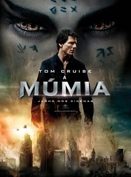

-

- Lançado 8 de junho de 2017
- Duração 1h 51min
- Direção Alex Kurtzman
- Elenco : Tom Cruise, Sofia Boutella, Annabelle Wallis
- Generos Fantasia, Aventura, Terror
Não recomendado para menores de 12 anos Na Mesopotâmia, séculos atrás, Ahmanet (Sofia Boutella) tem seus planos interrompidos justamente quando está prestes a invocar Set, o deus da morte, de forma que juntos possam governar o mundo. Mumificada, ela é aprisionada dentro de uma tumba. Nos dias atuais, o local é descoberto por acidente por Nick Morton (Tom Cruise) e Chris Vail (Jake Johnson), saqueadores de artefatos antigos que estavam na região em busca de raridades. Ao lado da pesquisadora Jenny Halsey (Annabelle Wallis), eles investigam a tumba recém-descoberta e, acidentalmente, despertam Ahmanet. Ela logo elege Nick como seu escolhido e, a partir de então, busca a adaga de Set para que possa invocá-lo no corpo do saqueador.